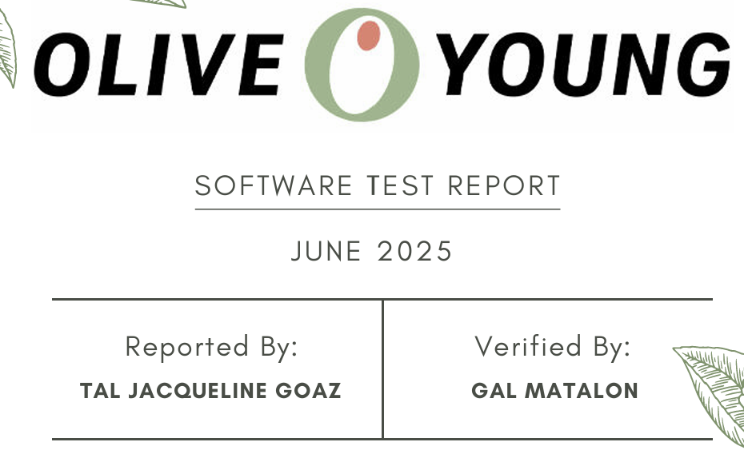

Tal Jacqueline Goaz
I'm
About
I'm a QA Engineer with a keen eye for detail and a strong passion for ensuring software quality.
I enjoy digging into systems to find bugs before users do and continuously improving my skills in both manual and automated testing.
Eager to learn, grow, and contribute to a collaborative team, I'm excited to take on new challenges and help deliver reliable, high-quality products.

QA Engineer & Automation Tester
- Birthday: 1 April 1996
- Website: www.example.com
- Phone: +972 50 976 4004
- City: Petach Tikva, Israel
- Age: 29
- Email: talgozal@gmail.com
- Work: Available
Skills
Few of my skills i achieved along my way
Resume
My resume provides an overview of my professional background, skills, and areas of expertise.
It reflects my commitment to learning, growth, and making a meaningful contribution to any team I join.
Education
QA & Automation
2025 - Present
Automation College, Tel-Aviv, Israel
- Learning testing strategies such as Agile, Scrum, Waterfall, and the software development life cycle (SDLC)
- Hands-on practice with tools like Selenium, TestNG, JUnit, Cypress, or Playwright
- Programming in languages like Java, Python, or JavaScript to write automated test scripts.
- Working with tools like Jira, TestRail, or Zephyr to report and manage bugs, test cases, and test cycles
- Learning how QA fits into continuous integration and deployment pipelines using tools like Jenkins, Git, or GitHub Actions
Graphic & Web Design, UI/UX
2022 - 2023
John Bryce, Tel-Aviv, Israel
- Learning the basics of composition, color theory, typography, balance, contrast, and hierarchy
- Creating logos, visual systems, and branding assets for companies or products
- Designing for posters, magazines, packaging, social media, and websites
- Mastering tools like Adobe Photoshop, Illustrator, InDesign, and Figma
Professional Experience
Office Manager & CEO Assistant
2023 - Present
A. Rabinowitz, Tel-Aviv, Israel
- Handeling all logistical and administrative aspects of the office
- Preparing reports, producing invoices, working with suppliers and customers
- Production and editing clients's doucments, coordination of meetings with potential clients
- Working closly with a Judge/Arbitrator/Mediator, typing protocols and court decisions
Senior Representative
2022 - 2023
We Commerce, Petah-Tikva, Israel
- Providing customer service for different brands across the country
- Management and accompaniment of projects for new products going on market
- Dealing with a number of factors and platforms, bug reporting and communication across them
Projects
Here are some of my recent STR projects that demonstrate my skills and experience in quality assurance.

Olive Young Mobile Testing
Comprehensive Software Test Report (STR) for the Olive Young mobile application. This project includes detailed test cases, bug reports, and recommendations based on thorough testing of the mobile app's functionality, user interface, and performance. Demonstrates expertise in mobile application testing methodologies and comprehensive reporting.

Panda Web Testing
Detailed Software Test Report (STR) for the Panda web platform. This project encompasses comprehensive test case execution, defect tracking, and quality assurance documentation. Includes thorough analysis of the web platform's functionality, user experience, and technical performance with detailed recommendations.
Services
As a QA Engineer, I offer a range of services aimed at ensuring software quality, reliability, and user satisfaction. Below are some of the key areas I specialize in:
Manual Testing
Systematically testing applications by hand to identify bugs, usability issues, or unexpected behavior. This includes functional testing, exploratory testing, and regression testing
Test Automation
Writing scripts to automate repetitive test cases using tools like Selenium, Cypress, or Playwright. Often involves integrating tests into CI/CD pipelines
Test Planning
Create comprehensive test strategies and detailed test plans based on project requirements and user stories to ensure thorough coverage of all functionality and user scenarios.
Test Case Design
Design detailed test cases with clear steps, expected results, and test data to systematically validate each feature and ensure comprehensive testing coverage.
Bug Reporting & Tracking
Identifying bugs and documenting them clearly using tools like Jira, including steps to reproduce, severity, priority, and screenshots/logs
API Testing
Testing the functionality, reliability, and security of APIs using tools like Postman or REST Assured
Contact
Let's work together!
I'm available for further discussion and open to new opportunities.
Please don't hesitate to get in touch for any inquiries or collaborations.